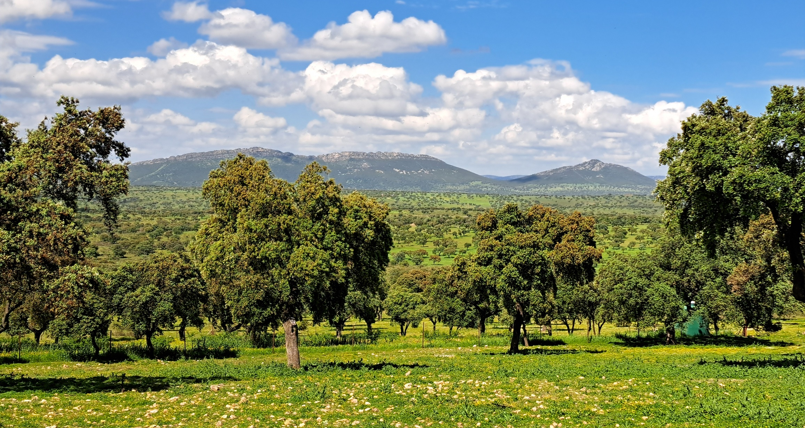
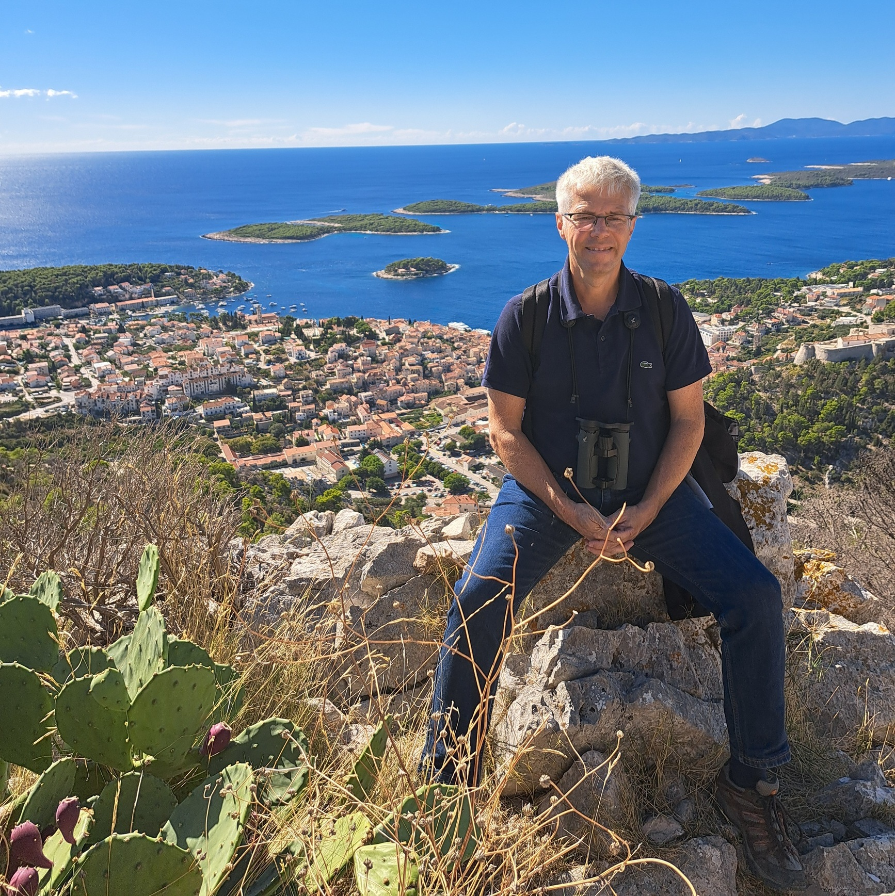

Michael Schaub
I am a population ecologist at the Swiss Ornithological Institute.
My research combines demographic monitoring, capture-recapture analysis and integrated population models to understand population dynamics and support wildlife conservation.
Profiles
Research Interests
- Population ecology
- Integrated population models
- Capture-recapture models
- Bayesian hierarchical models
- Demographic monitoring
- Birds
Books

Integrated Population Models
Theory and ecological applications with R and JAGS
Schaub & Kéry (2022)
Book webpage

Bayesian Population Analysis Using WinBUGS
A Hierarchical Perspective
Kéry & Schaub (2012)
Book webpage
Selected Publications
-
Schaub, M. et al. (2026).
Estimating seasonal survival of migratory birds using continuous-time capture–recapture models.
Ecological Applications.
DOI
-
Badia-Boher, J.A. et al. (2026).
An integrated model of territory occupancy and mark-recapture data for estimating spatial variation in survival.
Methods in Ecology and Evolution.
DOI
-
Muller, M.H. et al. (2026).
Assessment of large-scale spatial variation in age-specific survival and age at first breeding in a long-lived species.
Journal of Animal Ecology.
DOI
-
Martin, E.C. et al. (2026).
Identifying the demographic pathways linking environmental covariates to population dynamics in an avian migrant.
Ecological Applications.
DOI
-
Schaub, M. & Badia-Boher, J.A. (2025).
Comparison of Bayesian models to estimate survival from dead-recovery alone and together with live-encounter data: challenges and opportunities.
Ecology and Evolution.
DOI
Publications
My full publication list is available on
Google Scholar.
Code and Tutorials
Code repositories, tutorials, and examples for integrated population models,
capture-recapture analyses, Bayesian modeling, and NIMBLE. ...under construction...
Hierarchical Modeling in Ecology
Quantitative research in ecology relies on hierarchical modelling. This page contains useful books on this topic, as well as links to relevant software, code and R packages.
Workshops
Together with Marc Kéry and other colleagues, I regularly organise workshops on Bayesian Population Analyses (BPA), as well as more specialised ones on Integrated Population Models (IPM). Please contact me if you are interested.
See a list of past workshops.
Contact
michael.schaub@vogelwarte.ch